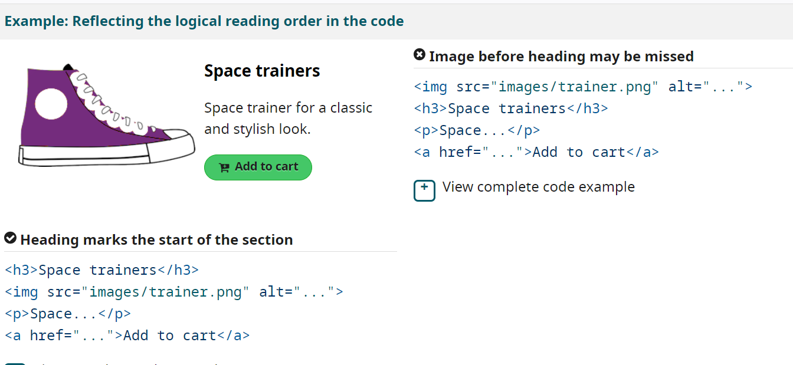

WAI is a W3C Web Accessibility Initiative
WAI provides a set of standards for web accessibility:
User agents include browsers, browser extensions, media players, readers, and other applications that render web content.
Authoring tools are software and services that “authors” (web developers, designers, writers, etc.) use to produce web content. For example: HTML editors, content management systems (CMS), and websites that let users add content, such as blogs and social networking sites.
Web “content” generally refers to the information in a web page or web application
WCAG is a Web Content Accessability Guidelines.
WCAG is a documentation that describe how to make web applications suitable and accessible for people with disabilities.
WCAG2.1 include 12 guidelines.
Associate each input (formControl) with label
Include alternative text for images
Identify language and language changes for each page
html lang="en"
Use markUp to convey structure and information
Use WIA ARIA roles to identify functionality (role=”search”) and if possible HTML5 semantic tags
Provide user clear description and error information to avoid mistakes (error messages, examples)
For example, (02) 1234 1234
Reflect the reading order in the code order
Write code to adapt content for user technology (Responsive, and different viewport's)
/* On narrow viewports,
make the navigation full width */
@media screen and (min-width: 25em) {
#nav {
float: none;
width: auto;
}
#main {
margin-left: 0;
}
}
Provide meaning for non-standart interactive elements
Provide keyboard accusable for all alternative interactive elements
Think about keyboard access, especially when developing interactive elements, such as menus, mouseover information, collapsable accordions, or media players. Use tabindex="0" to add an element that does not normally receive focus, such as or, into the navigation order when it is being used for interaction. Use scripting to capture and respond to keyboard events.
Avoid CAPTCH where possible
If it not possible to avoid capture you should make CAPTHCHA understandable and clear
WIA-ARIA is Web Interface Accessibility - Accessible Rich Internet Application
WIA-ARIA provide developers a set of new HTML attributes wich add additional schematic and make elements more accessible.
Click me!
Accessibility tree is a tree that browser make from DOM tree and provide information about elements for assistive tools (screen readers and e.c.t).
To make accessibility tree browsers take info from tags elements and nodes. To describe roles and provide browser information about schematic and content of your application your should use semantic/landmarks tags like main, nav, section, article, button, side…
Hello world
The European Union follows the European Accessibility
Act (EAA). Similar to the Americans with Disabilities
Act (ADA) in the
United States, the EAA requires all members of the E.U. to provide accessible products and services,
including e-commerce, banking services, smartphones, ticketing and check-in, and more.
The Web Accessibility Directive and
EAA are based on WCAG standards, though they differ significantly.
Conclusion:
All government web application should have WCAG2.1 with AA success tests criteria,
other
institution and private organization WCAG2.1 with A success rate.
The USA follows the ADA American Accessible Design standard - say what is required for a
building or facility to be physically accessible to people with disabilities.
Conclusion:
All government web application should have WCAG2.0 with AA success tests criteria, other
institution and private organization WCAG2.0 with A success rate.